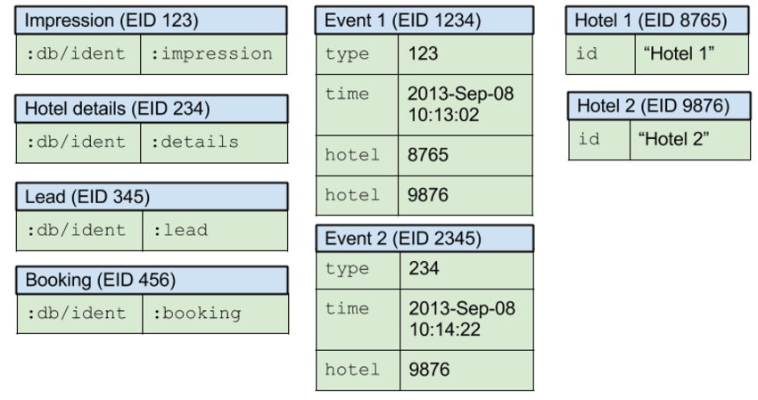
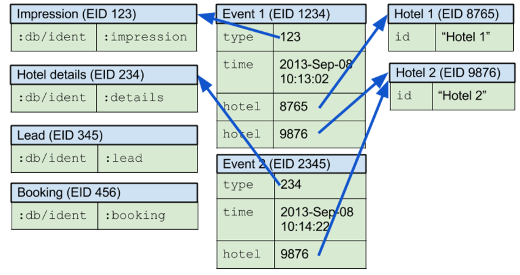

Real World Datomic: An Experience Report
Table of Contents
- 1 Real-World Datomic: An Experience Report
- 1.1 Slides
- 1.1.1 Me
- 1.1.2 Room Key
- 1.1.3 The Problem
- 1.1.4 Datomic's Architecture
- 1.1.5 Datomic's Data Model
- 1.1.6 Attributes
- 1.1.7 Capturing Events - Schema
- 1.1.8 Capturing Events - Example
- 1.1.9 Capturing Events - Refs
- 1.1.10 Storing and Retrieving Data in Datomic
- 1.1.11 Datomic Indexes
- 1.1.12 EAVT and AEVT
- 1.1.13 Capturing Events - EAVT
- 1.1.14 Capturing Events - EAVT
- 1.1.15 Capturing Events - AEVT
- 1.1.16 AVET and VAET
- 1.1.17 Capturing Events - AVET
- 1.1.18 Capturing Events - VAET
- 1.1.19 Index Storage and Retrieval
- 1.1.20 Trying to Solve the Problem - Query
- 1.1.21 Why This Didn't Work
- 1.1.22 Anatomy of an Entity ID
- 1.1.23 A Change In Approach
- 1.1.24 The Code
- 1.1.25 Why You Shouldn't Always Do This
- 1.1.26 Colophon
- 1.2 Questions?
- 1.3 Thanks!
- 1.1 Slides
- 2 Footer
1 Real-World Datomic: An Experience Report title

1.1 Slides
1.1.1 Me
1.1.2 Room Key
1.1.3 The Problem
- Provide a summary of sales funnel events for Room Key
- Users move through the website
- impression -> hotel details -> lead -> booking
- impression -> hotel details -> lead -> booking
- Want per-day event counts by hotel & event type
- 30 days * ~20 events/sec * ~5 hotels/event
- => ~250M hotel-events
- => ~250M hotel-events
1.1.4 Datomic's Architecture
1.1.5 Datomic's Data Model
- All facts stored as
datoms
- A datom is EAVT tuple
Entity- The thing we're modeling
Attribute- Which aspect we're describing
Value- The quantity or quality
Time/Tx- When we learned this fact
- Yesterday, as part of a transaction that happened at 3:02PM, I learned that Craig likes pizza
1.1.6 Attributes
- Have a type, an ident, and a cardinality
- Optionally other stuff, e.g. uniqueness
- Optionally other stuff, e.g. uniqueness
- Types include the usual scalars: strings, numbers, etc.
- Also include
refs
- Value is an entity ID
- Allows datoms to form graphs
- Value is an entity ID
- Set of defined attributes constitutes database schema
1.1.7 Capturing Events - Schema
| Attribute | Type | Qualifiers |
|---|---|---|
:roomkey.hotel/id | string | unique |
:roomkey.event/type | ref | single |
:roomkey.event/hotels | ref | many |
:roomkey.event/time | inst | single |
1.1.8 Capturing Events - Example

1.1.9 Capturing Events - Refs

1.1.10 Storing and Retrieving Data in Datomic
- One or more datoms submitted to the transactor
- Datoms written transactionally to the log
- All datoms in the transaction get the same
tvalue
- All datoms also stored redundantly in the
indexes
1.1.11 Datomic Indexes
- Every datom stored in two or more
indexes
- Index is (logically) a sorted set of datoms
- Indexes named by their sort order
- EAVT, AEVT, AVET, and VAET
1.1.12 EAVT and AEVT
- All datoms stored in these
- EAVT
- Efficient access to all attributes of an entity
- Efficient access to all attributes of an entity
- AEVT
- Efficient access to all values of an attribute
- Efficient access to all values of an attribute
1.1.13 Capturing Events - EAVT
| E | A | V | T |
|---|---|---|---|
| <Event 1> | type | <impression> | 1111 |
| <Event 1> | time | 10:13:02 | 1111 |
| <Event 1> | hotel | <Hotel 1> | 1111 |
| <Event 1> | hotel | <Hotel 2> | 1111 |
| <Event 2> | type | <details> | 2222 |
| <Event 2> | time | 10:14:22 | 2222 |
| <Event 2> | hotel | <Hotel 2> | 2222 |
1.1.14 Capturing Events - EAVT
| E | A | V | T |
|---|---|---|---|
| 1234 | 26 | 123 | 1111 |
| 1234 | 27 | 10:13:02 | 1111 |
| 1234 | 28 | 8765 | 1111 |
| 1234 | 28 | 9876 | 1111 |
| 2345 | 26 | 234 | 2222 |
| 2345 | 27 | 10:14:22 | 2222 |
| 2345 | 28 | 9876 | 2222 |
1.1.15 Capturing Events - AEVT
| E | A | V | T |
|---|---|---|---|
| <Event 1> | type | <impression> | 1111 |
| <Event 2> | type | <details> | 2222 |
| <Event 1> | time | 10:13:02 | 1111 |
| <Event 2> | time | 10:14:22 | 2222 |
| <Event 2> | hotel | <Hotel 1> | 1111 |
| <Event 1> | hotel | <Hotel 2> | 1111 |
| <Event 2> | hotel | <Hotel 2> | 2222 |
1.1.16 AVET and VAET
- AVET
- Only stores datoms with attribute marked
:db/index
- Efficient lookup of entities by attribute/value pairing
- Only stores datoms with attribute marked
- VAET
- Only stores datoms with attribute of type
ref
- Allows efficient navigation of relationships in reverse
- Also called the
reverse index
- Only stores datoms with attribute of type
1.1.17 Capturing Events - AVET
| E | A | V | T |
|---|---|---|---|
| <Hotel 1> | id | "Hotel 1" | 888 |
| <Hotel 2> | id | "Hotel 2" | 999 |
1.1.18 Capturing Events - VAET
| E | A | V | T |
|---|---|---|---|
| <Event 1> | type | <impression> | 1111 |
| <Event 2> | type | <details> | 2222 |
| <Event 1> | hotel | <Hotel 1> | 1111 |
| <Event 1> | hotel | <Hotel 2> | 1111 |
| <Event 2> | hotel | <Hotel 2> | 2222 |
1.1.19 Index Storage and Retrieval
- Datoms are stored in compressed chunks called
segments
- Segments are stored as a tree
- Segments are immutable once written
- Each transaction conceptually creates a new root
- Persistent indexes built less frequently
- Peers pull segments from the appropriate index as needed
1.1.20 Trying to Solve the Problem - Query
[:find ?event-type ?hotel-id ?day (count ?event) :in $ [?hotel-id ...] ?since :where [?hotel-eid :roomkey.hotel/id ?hotel-id] [?event :roomkey.event/hotel ?hotel-eid] [?event :roomkey.event/time ?time] [(<= ?since ?time)] [(roomkey.time/midnight ?time) ?day] [?event :roomkey.event/type ?event-type]]
1.1.21 Why This Didn't Work
- Too much data, not enough time: ~250M datoms, 100ms
- No query order eliminates enough data
1.1.22 Anatomy of an Entity ID
- Entity IDs have two parts
- High bits are the
partitionID
- Low bits are a timelike component
- High bits are the
- Partition ID user-assigned at entity creation
1.1.23 A Change In Approach
- A big, giant cache
- Stop recording time explicitly
- Record events using a dedicated partition
- Use
seek-datoms
- Returns
java.lang.Iterableover raw index data
- Fast, lazy, reduceable
- Returns
entid-at
- Given a time and a partition, get an EID
- Given a time and a partition, get an EID
1.1.24 The Code
(defn datoms-between "Returns a reducible collection of datoms created between the start and end dates in a single partition." [db partition start end] (let [start-e (d/entid-at db partition start) end-e (d/entid-at db partition end)] (->> (d/seek-datoms db :eavt start-e) (r/take-while #(< (:e %) end-e)))))
1.1.25 Why You Shouldn't Always Do This
- Datalog is a big deal
- Joins!
- Query as data
- Future improvements to query
- Joins!
- Segment caching: hot data often in-memory
1.1.26 Colophon
- Appreciations
- Room Key
- Tim Ewald
- Rich Hickey
- Bobby Calderwood
- Stuart Halloway
- Room Key
- Typography
- Carrois Gothic
- Carrois Gothic